Что происходит: На скриншоте изображено окно настройки программы PuTTY для подключения к учебному серверу по протоколу SSH (Secure Shell).
kubsu-dev.ru – доменное имя сервера.58528 – нестандартный порт, выданный преподавателем.После нажатия Open PuTTY установит соединение и запросит логин (u82321) и пароль.
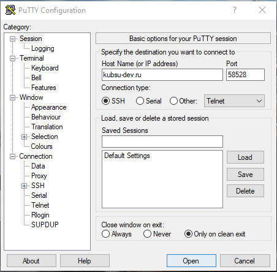
Скриншот 1.1: Настройки PuTTY
Результат: Успешный вход в систему. Приглашение командной строки u82321@web-server:~$ подтверждает, что пользователь готов к работе.
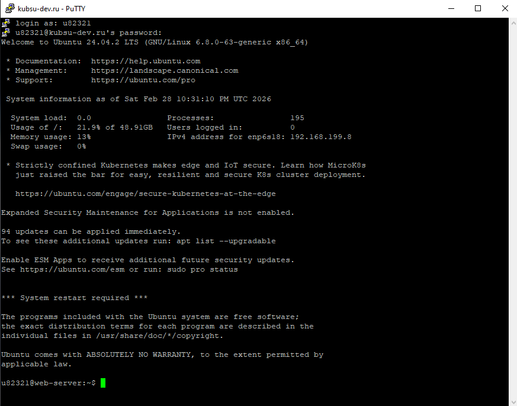
Скриншот 1.2: Успешная авторизация
ping -c 4 kubsu.ru
Что делает: Утилита ping отправляет ICMP-запросы и измеряет время ответа.
Результат: IP-адрес сервера 185.13.84.92. Все 4 пакета доставлены, потерь нет. Среднее время ответа – 1.038 мс.
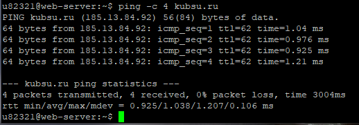
Скриншот 2: ping kubsu.ru
nslookup -type=A kubsu.ru
Что делает: Запрос A-записи (IPv4-адрес) для домена.
Результат: kubsu.ru → 185.13.84.92.
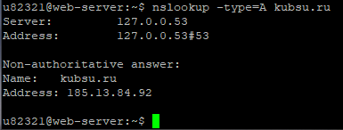
Скриншот 3.1: nslookup A kubsu.ru
nslookup -type=MX kubsu.ru
Что делает: Запрос почтовых серверов (MX-записей) для домена.
Результат: Получены три почтовых сервера с приоритетами:
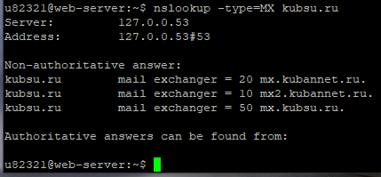
Скриншот 3.2: nslookup MX kubsu.ru
nslookup -type=A kubsu-dev.ru
Что делает: Запрос A-записи для kubsu-dev.ru.
Результат: IP-адрес 212.192.134.135.
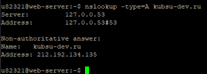
Скриншот 3.3: nslookup A kubsu-dev.ru
nslookup -type=MX kubsu-dev.ru
Что делает: Запрос MX-записей для kubsu-dev.ru.
Результат: Для домена нет MX-записей (ответ No answer). В авторитативном ответе указаны DNS-серверы:
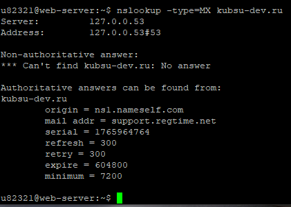
Скриншот 3.4: nslookup MX kubsu-dev.ru
whois kubsu.ru
Что делает: Запрос регистрационных данных домена.
Результат: Домен зарегистрирован 28 марта 1998 года (created: 1998-03-28T12:18:30Z). Срок действия оплачен до 30 апреля 2026 года.
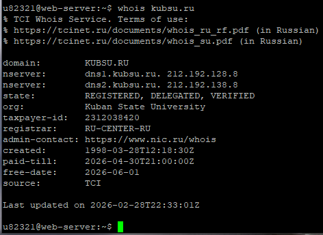
Скриншот 4.1: whois kubsu.ru
whois kubsu-dev.ru
Что делает: Запрос регистрационных данных для kubsu-dev.ru.
Результат: Домен зарегистрирован 12 февраля 2020 года (created: 2020-02-12T15:55:06Z). Срок действия – до 12 февраля 2027 года.
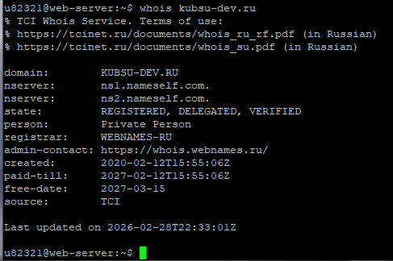
Скриншот 4.2: whois kubsu-dev.ru
На локальном компьютере создана папка lab1, в которую помещены все скриншоты и файл index.html.
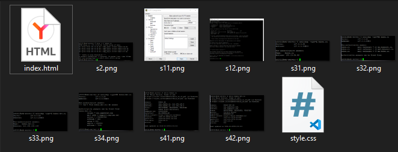
Скриншот 5.1: Содержимое папки lab1
Создан файл index.html с базовой структурой HTML, содержащий ссылки на все скриншоты и пояснения.
git init
git add .
git commit -m "Добавлены скриншоты и index.html"
git remote add origin https://github.com/Tem4ik2006/aweb1.git
git branch -M main
git push -u origin mainРепозиторий инициализирован, файлы добавлены, создан коммит, установлена связь с удалённым репозиторием на GitHub (пользователь Tem4ik2006, репозиторий aweb1). Изменения успешно отправлены.
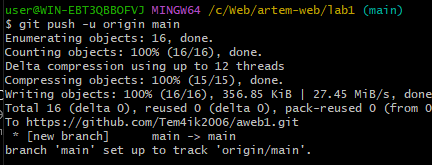
Скриншот 5.3: Отправка файлов на GitHub
git clone git@github.com:Tem4ik2006/aweb1.git
На сервере выполнен клон репозитория по SSH. Для этого предварительно был сгенерирован SSH-ключ и добавлен в аккаунт GitHub.
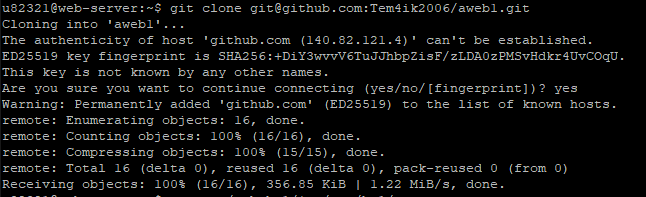
Скриншот 5.4.1: Клонирование репозитория
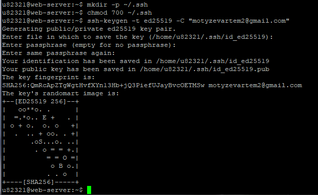
Скриншот 5.4.2: Генерация SSH-ключа
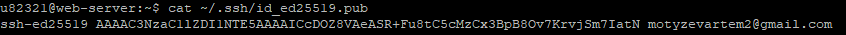
Скриншот 5.4.3: Публичный ключ
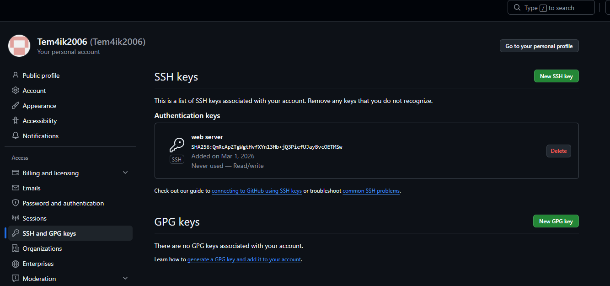
Скриншот 5.4.4: Добавление ключа в GitHub
mkdir -p ~/www/hw1
cp -r ~/aweb1/* ~/www/hw1/
ls ~/www/hw1/Создан каталог ~/www/hw1 (доступный через веб), в него скопированы файлы из клонированного репозитория. Команда ls подтверждает наличие файлов.
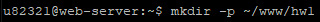
Скриншот 5.5.1: Создание каталога
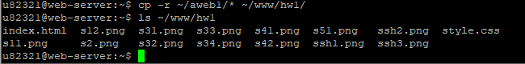
Скриншот 5.5.2: Копирование и проверка
В браузере открыт адрес http://u82321.kubsu-dev.ru/hw1/. Страница загружается, все скриншоты отображаются корректно.
Что делает: FileZilla подключается к серверу kubsu-dev.ru (порт 58528, логин u82321) по SFTP. Файлы из каталога ~/www/hw1 скачиваются на локальный компьютер.
Результат: Все файлы отчёта успешно скопированы. Затем новые скриншоты FileZilla добавлены в Git и отправлены на сервер.
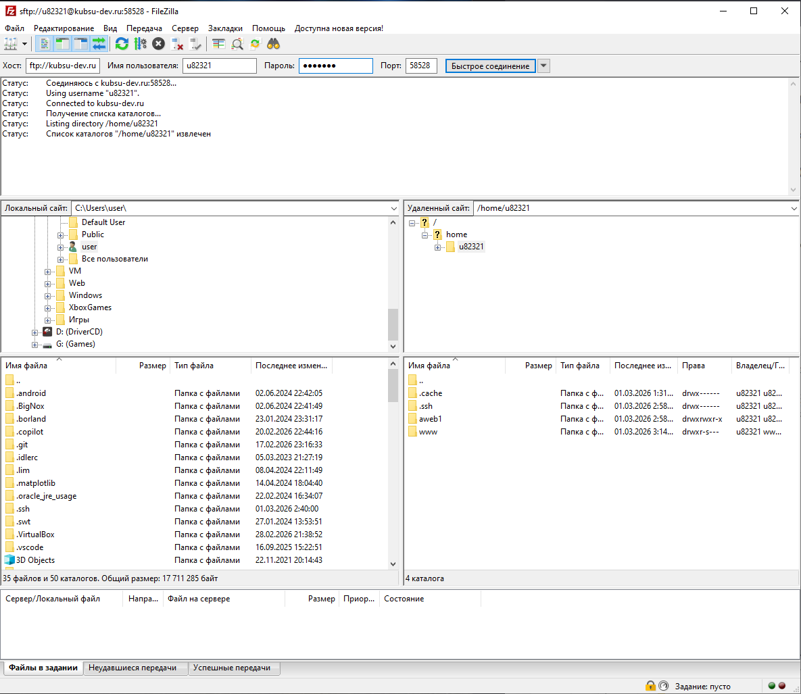
Скриншот 6.1: Подключение к серверу
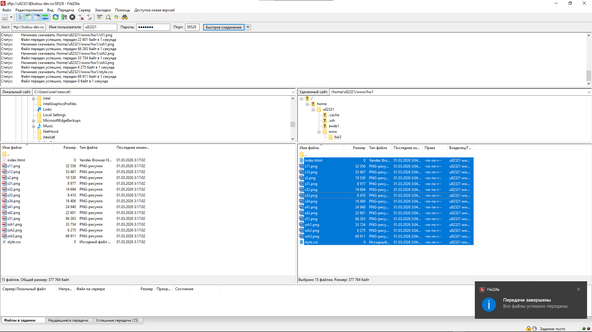
Скриншот 6.2: Передача файлов
После скачивания скриншоты FileZilla были добавлены в локальный репозиторий и отправлены на GitHub:
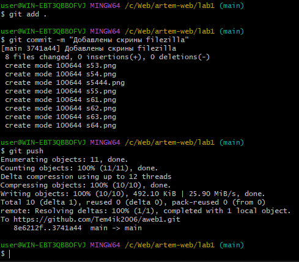
Скриншот 6.3: Добавление скриншотов в Git
На сервере выполнено обновление репозитория и копирование файлов в ~/www/hw1:
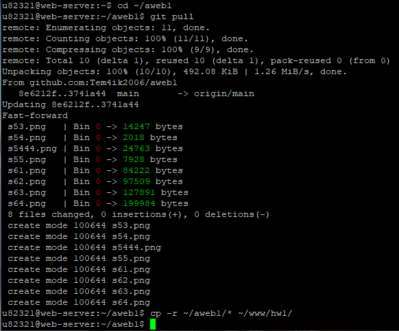
Скриншот 6.4: Обновление на сервере